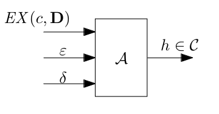

PAC learnability
Every learning problem can be seen as a task taking as input data and giving as output a string representation of a Classification algorithm. The problem can be assumed to work with an instance space X that contains the encoding of the instances we want to classify. X can be generated with a given (unknown) distribution D that we want to learn. A concept class C is a collection of concepts, namely a subset of P(X). These are the concepts which are sufficiently simple to describe, and that algorithms can handle. The target concept is the concept the learner wants to build a classifier for.
The interface of any learning algorithm A can be described as follows: 
Where:
- is a confidence parameter
- is an error parameter
- EX(c,D) is an "oracle" that produces an element x from D correctly classified.
The error of any can be defined as:
PAC learnable definition
Any concept class C over the instance space X is PAC learnable iff there is an algorithm A s.t.
If the time complexity of A is bounded by a polynomial in and , we say that C is efficiently PAC learnable.